The art and first-session loop are strong. The next release should fix data recovery, progress accounting and interaction bugs, then give people better control over real household routines.
Storage reset catches cleanup errors and resolves. A fresh store reloads the old home. Backup failure can also discard unsynced work.
Change: Propagate cleanup failures; make backup and replacement atomic.
A second device deletes a chore knowing one completion; the server cascade also deletes a newer completion, and the total drops from two to one.
Change: Archive dated history or bank authoritative counts in the delete transaction.
A weekly-only user reaches a seven-day streak, but rewards are reconciled only on completion. After the streak breaks, the stored best can still be one.
Change: Reconcile on day changes, hydration and sync; recover historical milestones.
Saved account A's retained cache can be offered and uploaded to replacement guest B. This is limited to the same browser; it is not an RLS bypass.
Change: Require saved-owner reauthentication; distinguish guest transfers.
The native modal makes sibling gift and undo controls inaccessible. The gift appears only after closing the sheet.
Change: Coordinate modal ownership and keep corrections reachable.
Pick a washer, Tab to Cancel, press Enter. The room adds the washer and two chores because its key handler intercepts the button event.
Change: Limit room shortcuts to the room itself.
After finishing dishes, a sink-only home says the next chore is Monday's scrub. Dishes actually recur tomorrow.
Change: Choose the earliest due date across both upcoming and completed-today rows.
When duplicate homes exist, the most-furnished home wins on every render. Removing one object can select another pet and home.
Change: Persist the active home ID and offer explicit recovery choices.
A deletion reduces a six-day streak to three and a weekly total from nine to three. Existing tests encode this behavior; it is a product decision to revisit.
Change: Archive chores while preserving dated completions.
On a new device, the user must create a disposable home before reaching Settings and Sign in.
Change: Add an existing-home entry to Landing.
Changing screens leaves the URL and history unchanged. Switching away from a new chore discards its draft.
Change: Add history navigation and preserve or guard unsaved drafts.
False results are ignored; exceptions only reach the console. The confirmation closes regardless of outcome.
Change: Show a retryable error and retain the selected home.
Week totals include seeded counts:false completions that rewards and streaks correctly exclude.
Change: Exclude sample history from personal activity totals.
Durable cleanup, completion accounting, streak reconciliation, modal/keyboard fixes, accurate next dates, and browser regression tests.
First due date, skip/snooze, archived history, persistent corrections, direct sign-in, drafts and a task-focused list.
Closed-app reminders, export/import, setup templates, named rooms, rule explanations and longer cosmetic progression.
Invitations, assignments, completion attribution, multiple rooms and tested conflict handling.
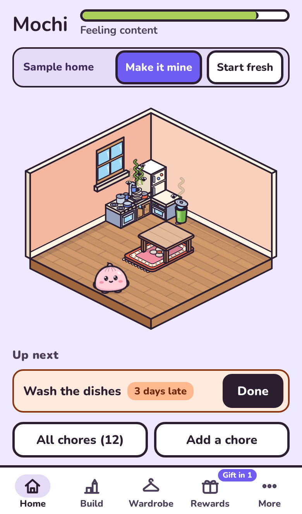
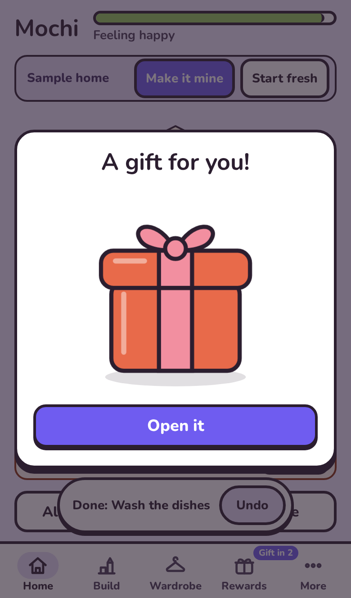
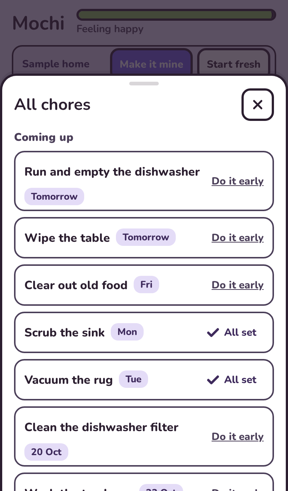
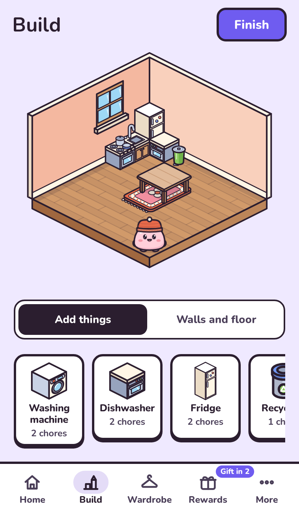
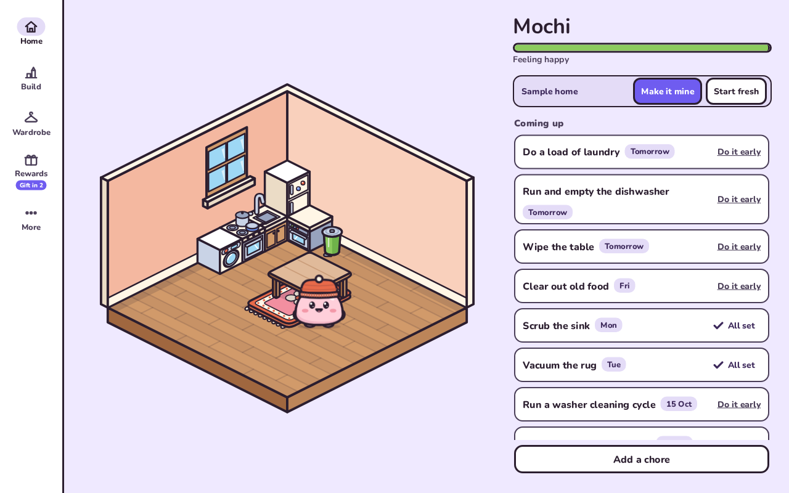
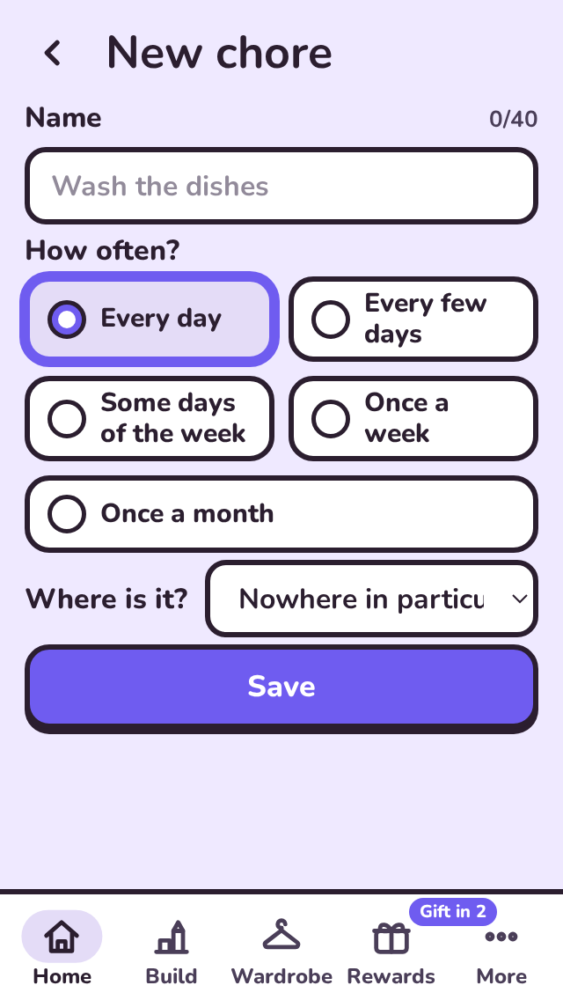
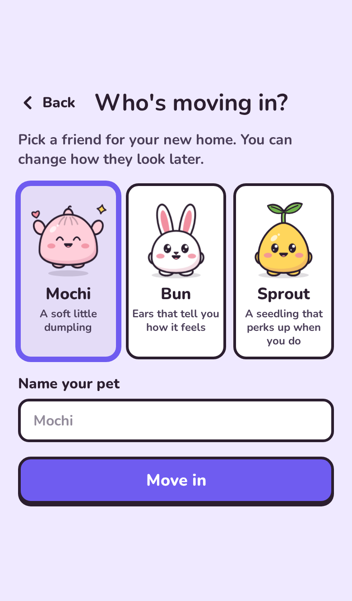
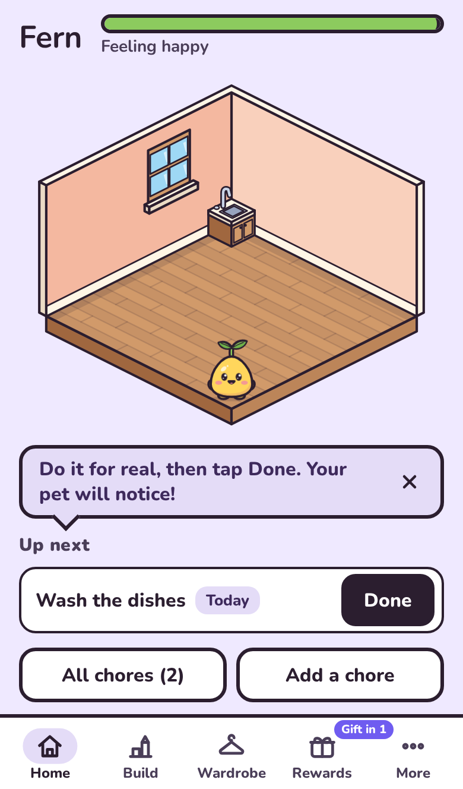
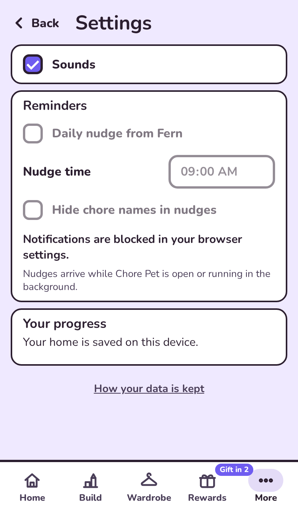
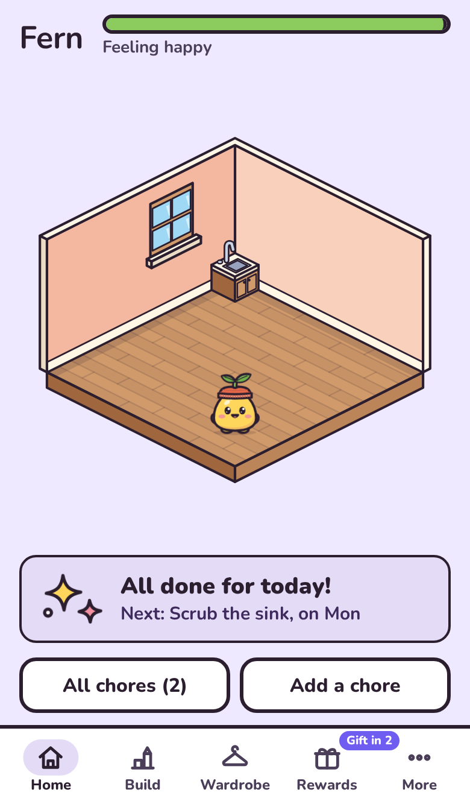
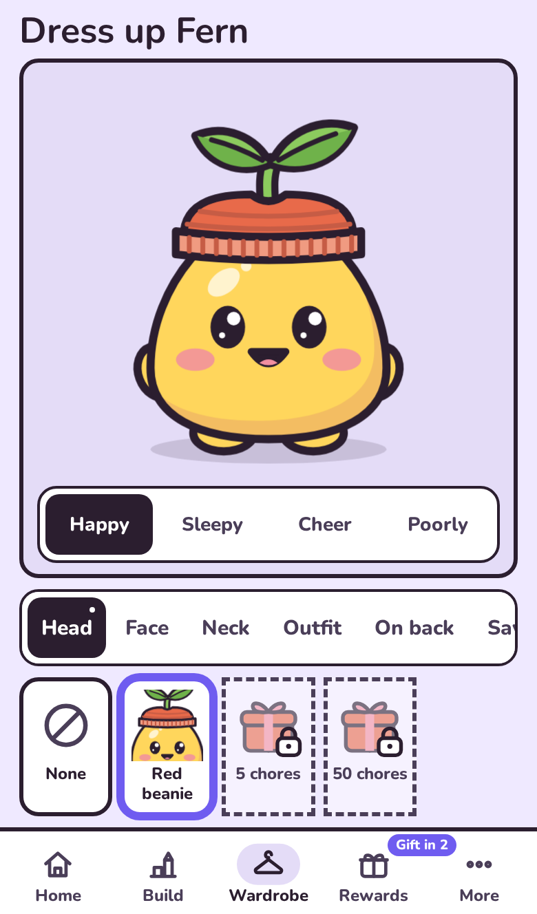
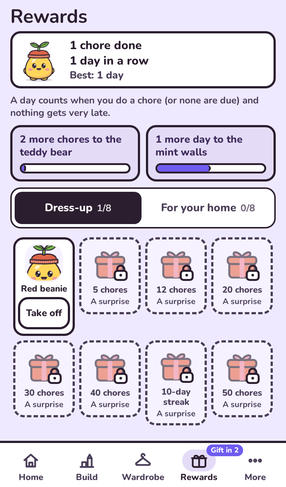
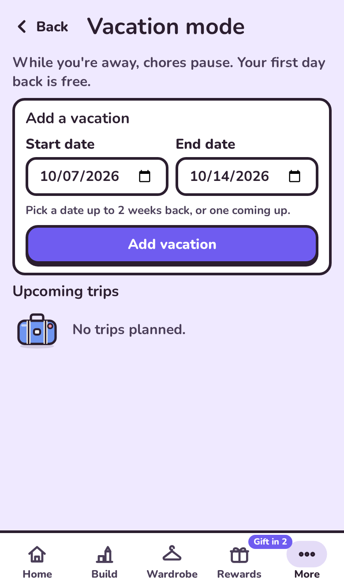
1. Sample home: coherent art and a clear next action. A fuller daily task overview would help returning users.
Lint and build passed. Fresh onboarding, first gift, PNG export, reload persistence and cached launch with the local server stopped were checked. Cloud login/delivery, deployed database settings, real phones and full accessibility compliance remain unverified. Data findings use controlled repository-level reproductions. No application fixes or deployment were made.